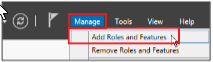

Built Into windows 10- provides a disk encryption for the OS
Encryption uses AES, support for key lengths of 128 and 256
Provides pre-boot protection, network unlock, GUI, and PowerShell management
=====================================
Implementation on Windows Server:


In this task, you will configure a policy for BitLocker to authenticate without a TPM chip because the chip does not exist on the VM
Create New GPO inside Group Policy Objects folder- Name it TPM
- Navigate to Operating System Drives


Then

And select your new GPO
=====================================
OPEN WINDOWS 10 CLIENT
search for Manage BitLocker


Print/ Save the Recovery Key somewhere


RESTART AND YOUR DISK IS ENCRYPTED